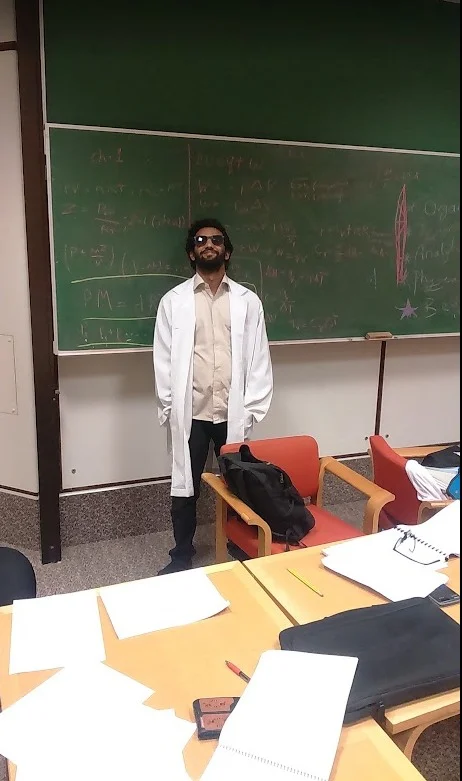
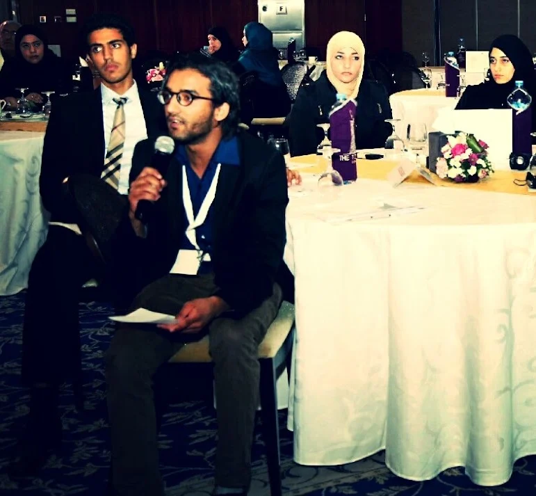

01 / 2021 · FIRST AUTHOR
Pulmonary epithelial injury
How airway reopening injures cells, and whether pharmacological pretreatment alters their response.
Al-Ruweidi et al. · Journal of Applied Physiology · 2021
Published study ↗MAHMOUD KHATIB A. A. AL-RUWEIDI
I study how molecular and material design shape what a therapeutic reaches, and how living systems respond.
A chemist and pharmaceutical sciences researcher working across pulmonary epithelial injury, inhalable drug carriers and quantitative biology. My current MSc research at Qatar University investigates dexamethasone niosomes and proniosomes for inhalation.

SELECTED WORK / THE QUESTION & THE EVIDENCE
From a moving air–liquid interface to an engineered vesicle, the connection is experimental: define the system, measure its behaviour, test the explanation.
How airway reopening injures cells, and whether pharmacological pretreatment alters their response.
Al-Ruweidi et al. · Journal of Applied Physiology · 2021
Published study ↗
Dexamethasone niosomes and proniosomes: connecting vesicle characterization with nebulization and aerosol delivery.
Current thesis · Conceptual schematic, not experimental results
Formulation methods ↗
Video microscopy and image analysis turn embryonic zebrafish circulation into quantitative measurements.
Benslimane et al. · Micron · 2020
Published study ↗Plasma treatment and surface modification connect polymer chemistry to the properties of a biomaterial.
Abdulkareem et al. · Polymers · 2021 · Figure 5 · CC BY 4.0
Published study ↗Computational work extends the same questions to biomedical images: equal-first-author fetal echocardiography research, image analysis and formulation modelling.
AI & scientific computing ↗METHODS IN MOTION / ORIGINAL RECORDINGS
An experimental method has a physical reality. These recordings open a window into the preparations and observations behind the research.
2016 archive · Avian preparation and observation.
Original recording · High-speed observation of the zebrafish heart.
I. THE ORGANISING IDEA
It is a physical system, an exposure problem, a biological encounter and a claim that must withstand scrutiny. Chemistry suggests what might work; formulation alters where it goes; living systems reveal whether the explanation survives. Each discipline exposes the limitations of the others.
THE THERAPEUTIC CONTINUUM
Six connected questions, each marked to distinguish past research, active work and future scientific ambitions.
Identify a mechanism worth modulating; a plausible target is not yet a medicine.
Related work ↗Heterocyclic chemistry, molecular sensors, polymeric micelles and engineered surfaces.
Related work ↗Dexamethasone niosomes and proniosomes for inhalation: characterize, formulate and nebulize.
Related work ↗Aerosol deposition, shear forces and models reveal whether delivery is physically credible.
Related work ↗Lung epithelial injury, cell models and zebrafish development test mechanisms in living systems.
Related work ↗Quality, reproducibility and preclinical evidence inform decisions before human trials.
Related work ↗EPISTEMOLOGY IN PRACTICE
Reproducible work, traceable methods, appropriate controls and measurement uncertainty belong to the same intellectual project as analytical chemistry. My interest in Lean Six Sigma and ISO 9001/17025 stems from this view. Knowledge of a standard is not a claim of institutional accreditation.
Quality credentials and training ↗THE COMPLETE LIBRARY
Follow a specific question into the publications, methods, figures and experiences behind it.
Every original research section, the searchable publication catalogue, chapters, historical essays, charitable organisations and press records.
Zebrafish, chick embryo, cell culture, synthesis, nanocarriers and much more.
Primary figures and illustrations with context and provenance.
Fetal echocardiography, machine learning, imaging and formulation modelling.
The four grant-linked interdisciplinary research projects.
Observation, measurement and quantitative interpretation.
Dated photographic evidence and scientific video.
Education, research roles, credentials and quality qualifications.
Seven independent chemists discussing science weekly since 2016.
Chemistry festivals, youth research judging, outreach and mentoring.
THE SCIENTIFIC LIFE
From high-school anatomy in 2011, independent organic chemistry in 2016 and ACS student leadership to experimental biology and current drug-delivery research, my trajectory has been one of questions acquiring increasingly precise methods.
Read the research biography ↗Anatomy and living systems
Chem Squad and independent organic chemistry
ACS leadership and Washington, DC
Materials, zebrafish and lung-cell research
Pulmonary drug delivery and translational research


BEYOND THE LAB
A scientific idea matters not only for what it explains, but for how it is transmitted, examined and used.
History of pharmacy in Arabic and Islamic societies, book chapters, scientific essays and Drug Discovery Online columns.
Historical scholarship ↗Chem Squad, founded in the spirit of a 2016 organic chemistry laboratory, ACS student chapter leadership and educational initiatives including Majales and Zawya.
Meet Chem Squad ↗Chemistry festivals, research judging at Al Thakhira, public engagement and student training connect science to its communities.
Public science record ↗THE PATIENT PERSPECTIVE
My experience of chronic eosinophilic illness has shaped my interest in uncertainty and the distance between therapeutic promise and patients' lives. I am not asking for personal donations. The complete record links to established patient-support and research charities.
Verified organisations and donation links ↗LET THE NEXT QUESTION BEGIN
I welcome conversations with researchers, writers and collaborators, especially around molecular design, inhaled therapeutics and quantitative biology.